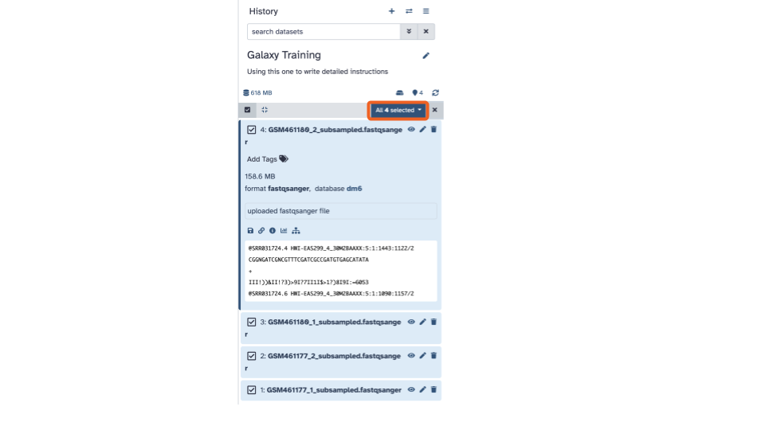
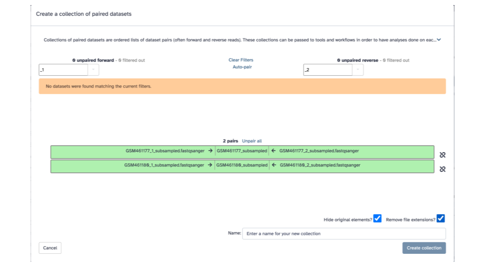

Galaxy Gene Expression Activity
Overview of activity and data
Our Galaxy activity is a condensed tutorial based on the “Reference-based RNA-Seq data analysis” Galaxy Training Tutorial.
It uses data that is deposited on and available from zenodo, including subsampled data that will be quicker to work with. For more info on the data, checkout the tutorial linked above.
Activity steps
Set up Galaxy’s history pane
If you have files in your history already, use the plus sign button on the top right of the history pane to
Create new history.Click the pencil button next to “Unnamed history”. Fill in the name with something descriptive/appropriate and add more detail a description to the annotation if you want. Click “Save”
Our History pane is empty and we’ll need to load data.
Data upload
Why do we want sequencing reads and a reference genome? Why are there 4 files for sequencing reads?
Sequencing reads
- Copy these links:
https://zenodo.org/record/6457007/files/GSM461177_1_subsampled.fastqsanger
https://zenodo.org/record/6457007/files/GSM461177_2_subsampled.fastqsanger
https://zenodo.org/record/6457007/files/GSM461180_1_subsampled.fastqsanger
https://zenodo.org/record/6457007/files/GSM461180_2_subsampled.fastqsanger- In Galaxy, click the “Upload” button in the top left of the page.
This will open up an interactive panel for data upload:
- Click the “Paste/Fetch Data” button in the middle of the bottom stretch of options.
- Paste the copied URLs into the middle box.
- Using the first dropdown menu on the top
(labeled “Auto-detect”), let’s select the filetype:
fastqsanger(Note the list includes bothfastqcsangerandfastqsangerwhere one is QC and the other is just q. Select the one with just a q).

- Using the second dropdown menu on the top
(labeled “unspecified (?)”), let’s select the reference organism:
D. melanogaster Aug. 2014 (BDGP Release 6 + ISO1 MT/dm6) (dm6)
- Click the blue “Start” button in the bottom stretch of options.
- Click the “Close” button at the end of the bottom stretch of options.
Creating a paired collection
- Click the “Select items” check in a box button on the left of the banner above the listed datasets

- Click “Select all” that appears on the right of the banner
- Click the down arrow

- Click “Build List of Dataset Pairs”.
This will open up an interactive panel:

- In the bottom right corner, enter
2 PE fastqsas the name
In the green strips, there are 3 columns, for each fastqsanger pair, in the middle column we’ll edit the displayed name to be a more informative name.
- Click on “GSM461177_subsampled”, and enter “GSM461177_untreat_paired”
- Click on “GSM461180_subsampled”, and enter “GSM461180_treat_paired”
- Click the blue “Create collection” button on the bottom right
Reference genome annotation
- Copy this link:
https://zenodo.org/record/6457007/files/Drosophila_melanogaster.BDGP6.32.109_UCSC.gtf.gz- In Galaxy, click the “Upload” button in the top left of the page. This will open up an interactive panel for data upload.
This will open up an interactive panel for data upload:
- Click the “Paste/Fetch Data” button in the middle of the bottom stretch of options.
ottrpal::include_slide("https://docs.google.com/presentation/d/1kWsS23lOJxfbhE8jSdE92JWnEceUEYm5xovCczPbe-8/edit#slide=id.g281646704fe_0_59")Paste the copied URL into the middle box.
Using the first dropdown menu on the top (labeled “Auto-detect”), let’s select the filetype:
gtf.Using the second dropdown menu on the top (labeled “unspecified (?)”), let’s select the reference organism:
D. melanogaster Aug. 2014 (BDGP Release 6 + ISO1 MT/dm6) (dm6)Click the blue “Start” button in the bottom stretch of options.
Click the “Close” button at the end of the bottom stretch of options.
Quality Control
Now that we have all of the data uploaded, we’ll begin with some quality control analysis of the data. This is useful for verifying that the data is high quality, but also will benefit us when we run later steps/need to know info as inputs for the mapping tools (e.g., read size).
FastQC
- On the top left of the page, the tool pane
has a search bar. Type
Flatteninto the search bar and select theFlatten collectiontool. This will open the Flatten collection tool in the middle pane.
- In the middle pane, if the “Input Collection:” is not already filled in with “2 PE fastqs”, click the down arrow and select it.
- Click the blue “> Run Tool” button. This will add the job to the queue and add the output to the top of the history pane.
You can rename the output to a more informative name by
- Clicking the pencil (the middle icon) for that dataset in the history pane. The icons are on the right side.
- In the “Edit Collection Attributes” pane that opens in the middle panel, enter a more informative “Name”
Click the blue “Save” button
On the top left of the page, using the tool pane search bar, type
Fastqinto the search bar and select theFastQCtool. This will open the FastQC tool in the middle panel.
- In the blue banner highlighted section, select the file folder “Dataset collection” icon
- If the “Raw read data” from your current history doesn’t automatically fill with the renamed output from the Flatten collection tool, select that dataset as input.
MultiQC to combine FASTQC output
- On the top left of the page, using the tool
pane search bar, type
multiinto the search bar and select theMultiQCtool. This will open theMultiQCtool in the middle pane.
- Within the Results section, for the
Which tool was used to generate logs?question, use the down arrow to see a list and scroll down until you seeFastQCand selectFastQC.
- In the FastQC output section, click the
+ Insert FastQC outputbutton.
- In the blue banner highlighted section, select the file folder “Dataset collection” icon
- Then with the down arrow, select the
FASTQC on collection __: RawDatadata set
Optionally, you can add a Report title near the bottom of the middle pane
Click the blue Run tool button in the upper right of the middle pane
- Let’s open and inspect the webpage output at the top of the history pane. To view the output file, click the eye icon. To download the output, click the save/floppy disc icon.
Cutadapt / Trim adaptors
- On the top left of the page, using the tool
pane search bar, type
Cutinto the search bar and select theCutadapttool. This will open theCutadapttool in the middle pane.
- For
Single-end or Paired-end reads?click the down arrow and selectPaired-end Collection.
- Verify that it selected your
2 PE fastqsas the paired collection input, if not, select it.
- Scroll down to the
Other Read Trimming Optionssection and edit theQuality cutoff(s) (R1)*parameter. Enter a value of 20.
- Scroll down to the
Read Filtering Optionssection and edit theMinimum length (R1)parameter. Enter a value of 20.
- Scroll down to the
Additional outputs to generatecheckbox section and check theReport: Cutadapt's per-adapter statistics. You can use this file with MultiQC
- Click the blue Run tool button
View Cutadapt results with MultiQC
- On the top left of the page, using the tool
pane search bar, type
multiinto the search bar and select theMultiQCtool. This will open theMultiQCtool in the middle pane.
- Within the
Resultssection andWhich tool was used to generate logssubsection, click the down arrow and selectCutadapt/Trim Galore!.
- In the blue banner highlighted section,
select the file folder “Dataset collection” icon & then with the
down arrow, select the
Cutadapt on collection __: Reportdata set
- We can explore this output as well to see how much of the data was trimmed
Next steps: Mapping with RNA STAR
Follow the steps in the Galaxy walkthrough to continue with mapping
Additional Resources
Here are some other relevant tutorials from Galaxy: